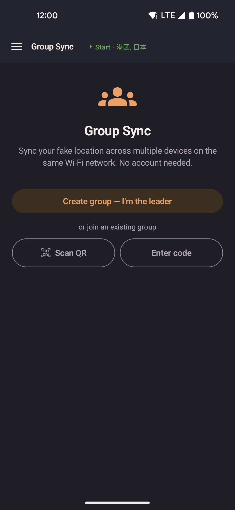

Group Sync
Share one location across several devices on the same Wi-Fi network. One device is the leader and sends its position. The other devices follow. No account is needed. See the privacy policy.

- One device creates the group and becomes the leader.
- Other devices join by scanning the QR code on the leader's screen, or by typing the 6-character join code next to it.
- Followers walk toward the leader's location at their own current speed.
- Everything stays between the devices on your Wi-Fi network.
How it works
- On the leader, open Group Sync from the side menu and tap Create group: I'm the leader.
- A QR code and a short join code appear. Either one identifies the group.
- On each follower, open Group Sync. Scan the QR code or type the join code.
- The follower joins and starts following at once. Follow leader is on.
Leader
The leader sends its location to every follower once a second.
| Control | Description |
|---|---|
| QR code | Shows the join invite and the join code as text. Tap the refresh icon for a new QR code. The join code stays the same. |
| Sharing toggle | When on, the leader sends its position. Turn it off to pause sharing and stay in the group. |
| Control API toggle | Off by default. When on, it shows the address and key that other apps on your Wi-Fi need to control this device. Regenerate key makes the old key stop working. It turns itself off when you leave the group or restart the app. |
| Leave group | Removes this device from the group. Followers lose the connection and stop getting updates. |
Follower
A follower does not jump to the leader's position. It walks there at the speed set on that device (Slow Walk, Walk, Run, Bike, or Drive). If the follower starts far away, catching up can take a while. If the leader keeps moving, the follower may never fully catch up. This is on purpose, so the movement looks like a real walk.
If the leader stops sharing and later starts again, followers pause and then jump to the leader's new location.
| Control | Description |
|---|---|
| Follow leader toggle | On by default when you join. When on, the device walks toward the leader. Turn it off to pause following and stay in the group. Moving the joystick also turns it off. |
| Follow leader teleports toggle | On by default. When the leader teleports, or stops and restarts somewhere new, your device jumps there too. Turn it off to walk there instead. Hidden when teleport features are hidden in Settings. Your device then always walks. |
| Teleport to leader now | Jumps to the leader's last known position at once. Shown while Follow leader is on. A badge next to it shows the suggested wait before you jump. If the app does not know the leader's position yet, it asks you to try again in a moment. |
| Leave group | Disconnects from the leader and clears the saved connection. |
Persistence
The app saves a follower's connection. If Follow leader was on when you closed the app, following restarts when you open it again, even after a restart of the phone.
The app also saves a leader's role. The group starts again when you open the app. You do not need to tap Create group again.
Requirements
- All devices must be on the same Wi-Fi network.
- Set up mock location on each device. A follower uses the position it receives as its fake location.
- No extra permissions are needed.
Limitations
- Mobile data or a VPN can stop a device from reaching the leader.
- If the leader's network address changes, for example after the leader restarts the app, followers try to reconnect for a short time. If that fails, rejoin with a new QR code or the join code.
- Some phone hotspots block the join code from finding the leader. Scan the QR code instead.
- A leader can run only one group at a time.
- A follower that joins far from the leader walks there at its own speed. Later leader teleports carry followers along unless Follow leader teleports is off. Use Teleport to leader now to jump at once.
Control API (for developers)
If you are integrating locationjoystick with another app on the same Wi-Fi network, turn on the Control API toggle in the Leader section (under Sharing). It shows the host, port, and API key that your code needs to send commands like teleport, walk, or route playback. Your commands will control this device the same way taps and swipes do — followers see the same movement signals. See the reference below for endpoints and authentication.
Overview
The Control API is a local HTTP server running only on the group leader. It listens on the host and port shown in the app.
All requests must include Authorization: Bearer <api-key> (from the Control API toggle).
Request and response bodies are JSON.
The base URL is http://<host>:<port>/api/v1/.
Authentication
Every request requires an Authorization header:
Authorization: Bearer <api-key>
If the key is incorrect or missing, the server responds with 401 Unauthorized and the header WWW-Authenticate: Bearer.
If the Control API is off, all /api/v1/ paths return 404 Not Found.
Example request:
curl -H "Authorization: Bearer abcdef123456..." \
http://192.168.1.100:8080/api/v1/statusErrors
All error responses use the same structure: a JSON object with an error object containing code (machine-readable identifier) and message (human-readable description).
Example:
{ "error": { "code": "bad_request", "message": "lat must be -90..90 and lon -180..180" } }Status codes and their meanings:
400 Bad Request— Invalid input or malformed JSON body.401 Unauthorized— Missing or incorrect API key.404 Not Found— Endpoint or resource does not exist, or Control API is off.405 Method Not Allowed— Wrong HTTP method (e.g.,GETinstead ofPOST).409 Conflict— State conflict (e.g., a route is playing when you try to start roaming, or the route you are trying to edit is currently playing).413 Payload Too Large— Request body exceeds 64 KiB.500 Internal Error— Server error; try again later.
State and Status
| Endpoint | Method | Description |
|---|---|---|
GET /status |
GET | Returns the API version, the device's role (always "leader"), and the number of active followers. Response: {"apiVersion":1,"role":"leader","followers":N}. |
GET /state |
GET | Full state snapshot: spoofing state, movement mode, current position, bearing, speed, active route, walk target, roaming status, and active speed profile. Returns a JSON object with keys spoofState, mode, position, bearing, speedMs, activeRouteId, walk, roaming, speedProfileId. Null fields use JSON null. |
GET /position |
GET | Current position only: {"lat":double,"lon":double}. Returns 409 Conflict if spoofing is not running. |
Movement Commands
| Endpoint | Method | Body | Description |
|---|---|---|---|
POST /teleport |
POST | {"lat":double,"lon":double} |
Teleport to the given coordinates. Followers will follow or walk there depending on their Follow leader teleports setting. Cooldown is advisory only — the request succeeds and returns a warning field (see example below) if you are within the suggested teleport cooldown, but the teleport runs anyway. Returns 409 Conflict if spoofing is not running. |
POST /walk |
POST | {"lat":double,"lon":double,"viaRoads":boolean?} |
Walk to the given coordinates. Set viaRoads to true to follow roads (Guided routing) or omit it / leave it false for a straight line. Followers walk toward the same target at their own speed. |
POST /walk/pause |
POST | empty | Pause the current walk without stopping it. The position is frozen. |
POST /walk/resume |
POST | empty | Resume a paused walk. |
POST /walk/stop |
POST | empty | Stop the walk and clear the target. |
POST /route/start |
POST | {"routeId":string,"loop":boolean?,"reverse":boolean?,"returnToLocation":boolean?,"followRoadsToStart":boolean?,"planting":boolean?,"teleportBetweenWaypoints":boolean?,"teleportBetweenDelaySeconds":integer?} |
Start playing a route. All options are optional and default to the route's saved settings. Returns 404 Not Found if the route does not exist. Followers walk or snap to waypoints depending on their teleport setting. |
POST /route/pause |
POST | empty | Pause the current route replay. |
POST /route/resume |
POST | empty | Resume a paused route replay. |
POST /route/stop |
POST | empty | Stop route replay and clear the active route. |
POST /roam/start |
POST | {"lat":double?,"lon":double?,"radiusMeters":double?,"distanceMeters":double?,"speedProfileId":string?,"followRoads":boolean?,"returnToInitialLocation":boolean?,"kind":string?,"plantingStartRadiusMeters":double?,"plantingEndRadiusMeters":double?,"plantingInfiniteLoops":boolean?,"plantingLoopCount":integer?,"plantingSpeedProfileId":string?} |
Start roaming with optional overrides. If lat and lon are omitted, roaming starts from the current position. kind can be WAYPOINT (random points) or PLANTING (grid pattern). All other fields default to the app's saved roaming defaults. Returns 409 Conflict if a route is currently playing. |
POST /roam/pause |
POST | empty | Pause roaming. |
POST /roam/resume |
POST | empty | Resume roaming. |
POST /roam/stop |
POST | empty | Stop roaming. |
POST /spoofing/start |
POST | empty | Start spoofing a fake location. Does nothing if spoofing is already running. |
POST /spoofing/stop |
POST | empty | Stop spoofing. The foreground service continues running if any automated movement (walk, route, or roam) is active. |
POST /speed-profile |
POST | {"id":string} |
Set the active speed profile (e.g. "slow_walk", "walk", "run", "bike", "drive"). Returns 400 Bad Request if the profile ID is unknown. |
POST /joystick |
POST | {"bearingDegrees":double,"force":double,"durationMs":long} |
Simulate a joystick hold: move in the given direction at the given force (0–1) for the given duration (milliseconds). The maximum duration is 10 seconds. To release immediately, send force 0 or durationMs 0. A new request replaces any running hold. |
Content API (Favorites, Routes, Speed Profiles)
| Endpoint | Method | Description |
|---|---|---|
GET /favorites |
GET | List all favorites. Response: array of objects with id, name, lat, lon, createdAt (milliseconds since epoch), and category (string or null). |
POST /favorites |
POST | Create a new favorite. Body: {"name":string,"lat":double,"lon":double,"category":string?}. Returns 201 Created with the new favorite object (includes id and createdAt). Name is required and cannot be empty. |
GET /favorites/{id} |
GET | Get a single favorite by ID. Returns 404 Not Found if not found. |
PUT /favorites/{id} |
PUT | Update a favorite. Body: {"name":string,"lat":double,"lon":double,"category":string?}. Preserves id and createdAt. Returns 200 OK. Returns 404 Not Found if not found. |
DELETE /favorites/{id} |
DELETE | Delete a favorite. Returns 404 Not Found if not found. |
GET /routes |
GET | List all routes (excludes the internal paste-temp scratch route). Response: array of route objects with id, name, routeType, isLooping, speedProfileId (string or null), randomizeTeleportOrder, createdAt, updatedAt, and waypoints (array of {id,lat,lon,orderIndex,waitSeconds}). |
POST /routes |
POST | Create a new route. Body: {"name":string,"routeType":"STRAIGHT"|"GUIDED"|"TELEPORT"?,"isLooping":boolean?,"speedProfileId":string?,"randomizeTeleportOrder":boolean?,"waypoints":[{lat,lon,waitSeconds?}]}. At least 2 waypoints required. Returns 201 Created with the new route object. Name is required. |
GET /routes/{id} |
GET | Get a single route by ID. Returns 404 Not Found if not found or if it is the internal scratch route. |
PUT /routes/{id} |
PUT | Update a route (entire waypoint list). Body: same as POST /routes. Preserves id and createdAt, updates updatedAt. Returns 200 OK. Returns 404 Not Found if not found, or 409 Conflict if the route is currently playing. |
DELETE /routes/{id} |
DELETE | Delete a route. Returns 404 Not Found if not found, or 409 Conflict if the route is currently playing. |
GET /speed-profiles |
GET | List the five built-in speed profiles. Response: array of objects with id, name, speedMetersPerSecond, builtIn (always true), active (boolean flag), and enabled (boolean flag). |
GET /speed-profiles/{id} |
GET | Get a single profile by ID. Profile IDs: slow_walk, walk, run, bike, drive. Returns 404 Not Found if not found. |
PUT /speed-profiles/{id} |
PUT | Update a speed profile's speed. Body: {"speedMetersPerSecond":double}. Speed must be between 0.01 and 15.0. Returns 200 OK with the updated profile. Profile ID, name, and builtIn flag cannot be changed. Returns 400 Bad Request if the speed is out of range, or 404 Not Found if the profile does not exist. |
Security Limits
- Local network only: The API is accessible only over the same Wi-Fi network. It does not work over the internet or mobile data.
- Plain HTTP, no encryption: Requests travel in clear text. Do not send the API key over an untrusted network.
- API key in clear: The key must be sent in the
Authorizationheader with each request. Treat it like a password. - Off by default: The Control API is disabled when you create or join a group. Turn it on explicitly in the Control API section to allow other apps to connect.
- Resets on exit: Leaving the group or restarting the app turns the Control API off. The key persists; you can turn the API back on next time.
- Key rotation: Tap Regenerate key in the Control API section to create a new key. The old key stops working immediately.
- Hide Teleport is bypassed: The Control API ignores the Hide Teleport setting. Routes and manual teleports through the API work regardless. You are responsible for the security implications of enabling the API.
- Cooldown is advisory: Teleport requests that violate the suggested cooldown still execute; they return a
warningfield but do not fail.
Example: Teleport via curl
Here is a complete example using curl to teleport the leader to Times Square in New York:
curl -X POST http://192.168.1.100:8080/api/v1/teleport \
-H "Authorization: Bearer abcdef123456..." \
-H "Content-Type: application/json" \
-d '{"lat":40.758,"lon":-73.9855}'If successful, the response is:
{"ok":true}If the device has moved recently and is in a cooldown period, the response includes a warning:
{"ok":true,"warning":{"code":"teleport_cooldown","message":"Suggested teleport cooldown has not elapsed","remainingSeconds":45,"totalSeconds":120,"distanceMeters":5280}}